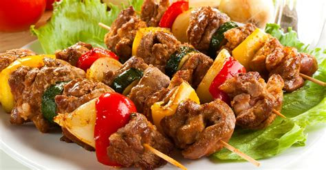

Lamb Kebab

Description
A tradtional middle eastern Asian lamb kebab infused with a delicious blend of herbs and spices. Cook this recipe to perfection using our recipe and step by step guide.
Ingredients
- juice of half lemon
- 450g/1lb lamb mince
- 1 tablespoon oil
- 55g/2oz fresh coriander leaves (washed and chopped)
- 4 cloves garlic (crushed)
- 4 green chillies (de-seeded and chopped)
- ½ tsp coriander powder
- 1 tsp cumin powder
- ½ tsp black peppercorns (crushed)
- ½ tsp turmeric powder
- ½ tsp garam masala
- 2 tsp grated ginger
- 1 tsp salt
Steps
- Mix two teaspoons of lemon juice and the lamb mince in a bowl.
- Blend the oil, garlic, ginger, chillies, crushed peppercorns, cumin, coriander powder, lemon juice, turmeric powder and salt in a food processor to a paste.
- Stir the paste and coriander into the mince. With wet hands skewer the meat into long sausage shapes. Rotate the meat around the skewer, pressing gently all round. Alternatively, shape the mixture into small patties.
- Brush each kebab with a little oil and grill under a medium heat or barbecue for 4-5 minutes on each side, or until cooked through.